Optical Character Recognition and Multimodal Transcription
From a picture of a page to text we can search, count and cite, and how to tell whether we can trust it.
DHG 502 Digital Approaches in Historical Research · Week 6 · ←→ navigate · 1–6 sections · G go to slide · F fullscreen
Today’s route
1
What is OCR? and why historians care
→
2
Preparing images before the model sees them
→
3
Measuring errors CER, WER and friends
4
Three papers Old Russian, Manchu, handwriting
→
5
Vision–language models how the pipeline works
This week’s readings
Maria Levchenko, “Evaluating LLMs for Historical Document OCR” (2025) Old Russian
Chung & Choi, “Fine-tuning vision–language models as OCR systems for low-resource languages: a case study of Manchu,” CHR 2 (2026) Manchu
Humphries et al., “Unlocking the Archives: LLMs Achieve State-of-the-Art Performance on the Transcription of Handwritten Historical Documents” (2024) Handwriting · student presentation
What is OCR?
Optical Character Recognition: turning an image of text into machine-readable text.
For handwriting the task is usually called HTR, Handwritten Text Recognition.
Input: pixels
346 × 578 pixels ≈ 200,000 numbers. The computer sees no characters at all.
→
Output: characters (Unicode)
紅樓夢小說本名石頭記作 者相傳不一究未知出自何人
First two columns of the page, transcribed.
text you can search, copy, count and quote
plus, depending on the tool, layout, line breaks, confidence scores
the transcript is only as good as the recognition: OCR output is a model’s reading, not the source
Why should historians care?
Search
Find every mention of a person, place or term across thousands of pages instead of reading them one by one.
Compute
Collocations, networks, topic models, stylometry: all of them start from text, not from images.
Scale and cost
Manual transcription is the slowest and costliest step of digitization.
Way of getting a transcript
Cost or speed
Professional transcription service
US$ 6–12 per page; one day to two weeks
Student research assistant
about 5–7 pages per day
Transkribus (HTR software)
about US$ 0.27 per page; about 40 s per page
Multimodal LLM (Humphries et al. 2024)
cents per page; 50 pages in about 30 s
Figures from Humphries et al., “Unlocking the Archives” (2024), 2024 prices; they will have changed.
A scan is a picture; a transcript is data. OCR is the first step of the source-to-data workflow, and every later result inherits its errors.
A short history of machine reading
1960sTemplate matching
Compare each character with stored shapes. Needs clean input and known fonts.
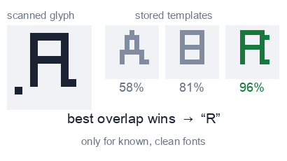
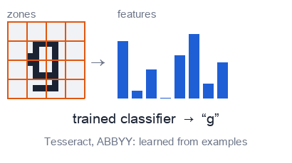
Late 1990s–2000sMachine learning
Pattern classifiers; ABBYY FineReader and open-source Tesseract become standard.
2010sDeep networks
CNN + LSTM models; Transkribus brings HTR to historians. One model per script or hand.
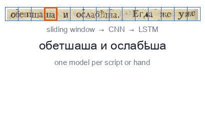
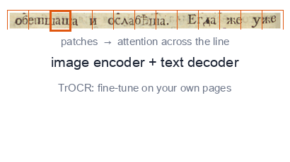
Late 2010s–Transformers
Attention-based recognizers such as TrOCR, usually fine-tuned on your own pages.
2023–Multimodal LLMs
General models that read an image and follow a prompt: GPT-4, Gemini, Claude, Qwen-VL, Llama Vision.
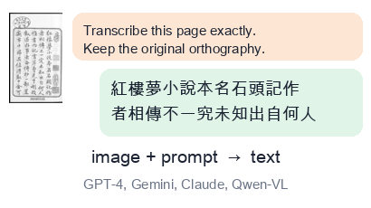
The big shift
Before: a specialist per collection
one model for one script, hand or collection
needs transcribed pages to train (about 75 pages for a new hand, Humphries et al.)
poor out of the box on new material
→
Now: a generalist, used with a prompt
one model for many scripts and tasks
used out of the box: image plus instruction in, text out
strong, but it brings a language prior (see the case studies)
What changes for the historian: less training data and tooling, more responsibility for checking the output.
3 Layout analysisregions, columns, text lines, reading order
→
4 Recognitionline image → characters
→
5 Correctionautomatic and human
→
6 Textplain text, PAGE XML, TEI…
Example: building ground truth for 18th-century Russian books
layout regions: a fine-tuned YOLOv8 detector
text lines: a pre-trained Riksarkivet model
first transcription: TrOCR fine-tuned on 495 pages
100% manual correction in the eScriptorium interface
Levchenko 2025
Where do multimodal LLMs fit?
They can do steps 3–5 in one call: page in, text out.
But steps 1–2 are still yours, and so is step 5: checking.
Layout, line count and image quality still decide how well they do (next sections).
Garbage in, garbage out
Simulated “phone photo”: a library scan of the Hongloumeng preface, tilted 4°, unevenly lit, with noise added.
Archival images are rarely clean. Humphries et al. built a test set the way historians actually work:
13 pages from black-and-white microfilm
11 photographed with a phone or handheld camera
8 shot in a dark room with poor contrast, 6 somewhat blurry
What typically goes wrong:
tiltuneven light, shadowslow contrastnoise, blurbleed-throughstamps and marginsJPEG artifactslow resolution
The Manchu OCR paper names the same culprits: “severe tilt, low-resolution or heavily compressed scans, uneven illumination, and strong background noise can all degrade recognition accuracy.”
A preprocessing recipe, step by step
1
DeskewStraighten the page. Even 2–3° of tilt hurts line detection.
2
Even out the lightEstimate the background and divide it out; stretch the contrast.
3
BinarizeLight denoising, then every pixel becomes black or white.
4
CropKeep the text block; drop table, fingers, stamps and margins.
5
Resize and saveEnough pixels per character; lossless format.
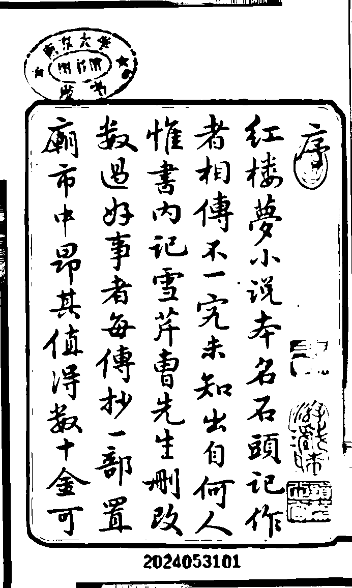
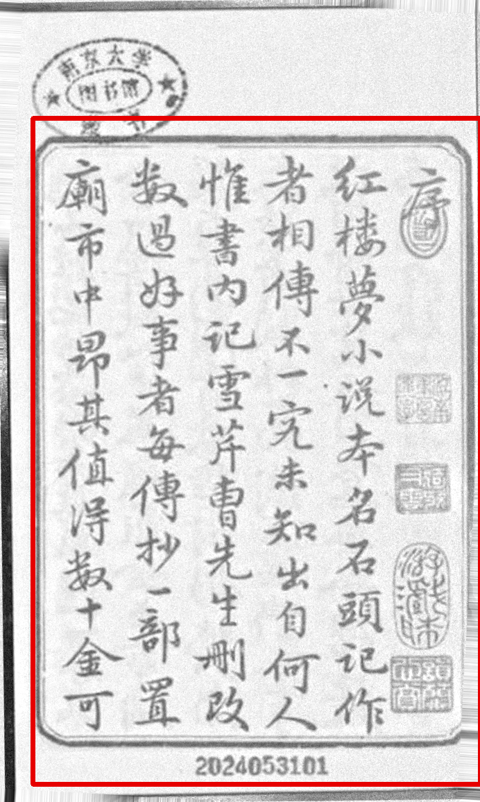
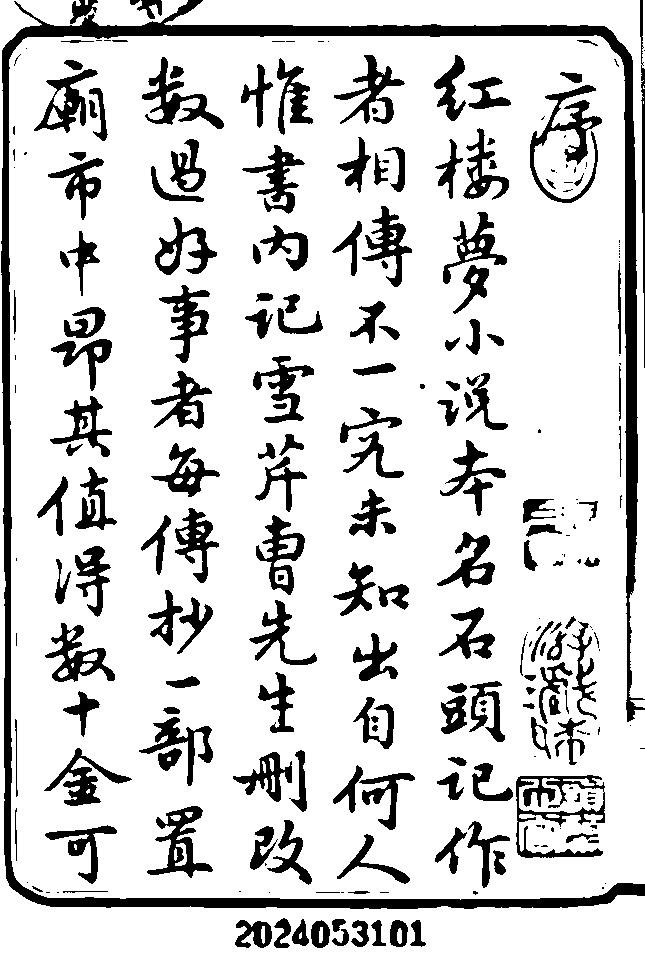
Tools: OpenCV or scikit-image (Python), ImageMagick, ScanTailor, or the built-in cleanup of Transkribus and eScriptorium.
All of it is a few lines of code; an AI coding assistant can write the script for your collection.
Binarization: black or white, but where is the line?
Starting point
Deskewed photo, uneven light
One global threshold
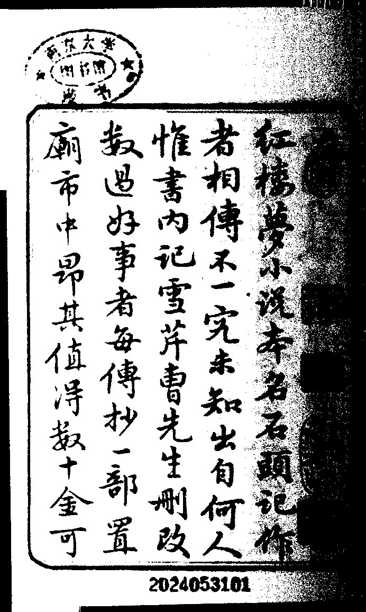
Otsu on the raw photo: the dark right side turns into a black smear
Adaptive (local) threshold
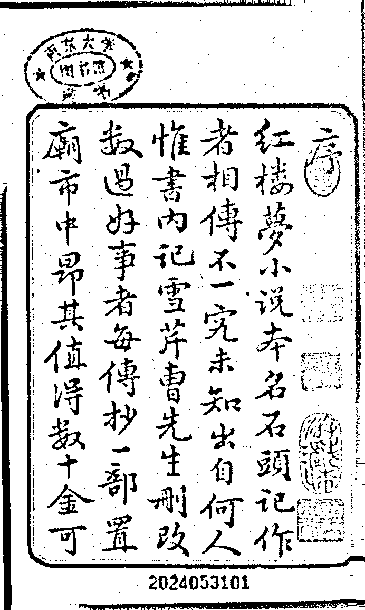
A threshold per neighborhood: better, but speckled and thin
Flatten light, then Otsu
Clean strokes, readable stamps and frame
Global: one cut-off for the page. Otsu’s method picks it automatically by separating the pixel histogram into two classes. Adaptive: the cut-off is computed locally.
Binarization throws information away: faint strokes, red seals, bleed-through. Many modern models do better on the grayscale or colour original. Test both on a sample.
In practice: what the Manchu paper did to its images
Synthetic training word: original (top) → preprocessed (bottom)
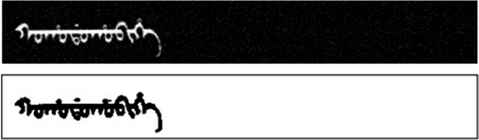
Chung & Choi 2026, Fig. 2. White-on-black with noise → inverted to black-on-white, denoised, contrast-enhanced, resized.
Scanned archive word
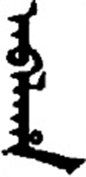
→
After processing
Figs. 3–4: a word cut out of the Old Manchu Archives by an OpenCV pipeline (binarization, denoising, segmentation), then inverted, contrast-enhanced and resized.
The real scans were normalized to look like the synthetic training images: same polarity, same size, same contrast.
Black-on-white, fixed dimensions, denoised: the model assumes such input.
The authors say it plainly: performance “is noticeably sensitive to deviations from these conditions,” and their model works on single words, so layout and line segmentation errors upstream would propagate.
Principle: the closer your image is to what the model has seen, the better it reads. Preprocessing is how you close the gap.
Resolution: pixels per character
≈ 300 ppi
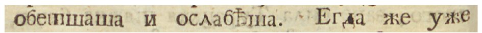
≈ 100 ppi
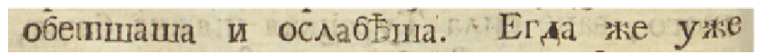
≈ 50 ppi
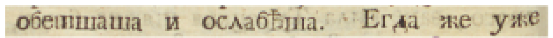
≈ 25 ppi
Same 18th-century line as in Levchenko 2025 (Fig. 4), downsampled and enlarged again.
300 ppi is the usual scanning standard for print.
Levchenko excluded all images below 150 ppi, citing evidence that LLM OCR degrades at low resolution.
dpi is only a label. Humphries’ images were tagged 96 dpi, yet were 1,200–1,750 px wide. What the model sees is pixels, and what matters is pixels per character.
Rule of thumb (ours, not from the papers): aim for characters at least ~20–30 px tall; small print and dense Chinese pages need more.
Photograph from close, with the page filling the frame. Higher resolution never hurts; you can always downscale later, but never recover detail.
Size, format, and how much to send at once
Size limits
Models cap the image they accept. Llama 3.2 Vision handles up to 1120 × 1120 px (Manchu paper); bigger pages are downscaled, and small type disappears. Crop or tile large pages instead.
Format
Archive in lossless TIFF/PNG. Heavy JPEG compression leaves artifacts that read as strokes or diacritics, and the Manchu paper lists “heavily compressed scans” among the failure causes.
Unit of input
One line, a sliding window of a few lines, or the full page? More context helps, but dense pages raise errors and hallucinations.
Levchenko 2025: CER (%) by input unit, 18th-century Russian(CER = character error rate, defined in the next section)
Model
Full page
Single line
Sliding window
Gemini-2.5-Pro
3.36
9.35
7.83
Qwen-2.5-VL
5.81
7.70
8.87
Claude-3.7
7.32
5.63
7.35
GPT-4o
9.23
23.75
11.93
Full page wins for most models, but not for all: there is no universal best setting, so run a small test on your own material. For weaker models, line count and layout complexity were the strongest predictors of error (r up to 0.55 and 0.39).
Do multimodal LLMs still need preprocessing?
Sometimes not
Humphries et al. sent phone photos and microfilm scans as they were, no preprocessing and no fine-tuning, and got CER 5.7–7% on handwriting from 33 different hands.
Often yes
The fine-tuned Manchu models and classic engines (Tesseract, CRNN, Transkribus models) assume normalized input, and fall apart on skewed, noisy or low-resolution scans.
A sensible default checklist
✓
Fix the big things: rotation, crop, glare, shadowscheap and nearly always helps
✓
Keep enough resolution; avoid heavy JPEGonly 150 ppi and up in Levchenko
✓
Binarize only if tests show it helpskeep a colour or grayscale copy
✓
Always keep the original imageand record every step you applied
Decide with data, not habit: transcribe 10–20 pages by hand once, then compare pipelines (raw vs. cleaned) by their error rates. That is the next section.
How do we measure an OCR error?
Compare the OCR output (hypothesis) with a human-made ground truth (reference) and count the edits needed to turn one into the other.
Substitution
a wrong symbol history → hystory
Insertion
a symbol that is not in the source history → hisstory
Deletion
a symbol that is missing history → histry
The minimum number of such edits is the Levenshtein (edit) distance. Count it on characters and divide: CER. Count it on words and divide: WER.
The reference itself matters: Levchenko’s ground truth was checked by a second annotator (character-level agreement 99.93%); human transcribers are not error-free either.
Character error rate (CER)
Referencedigitalhi–story
OCR outputdlgitalhisstory
1 substitution i → l 1 insertion an extra “s”
CER = S + D + INN = number of characters in the reference
CER = 1 + 0 + 115 = 13.3%
Lower is better; 0% is a perfect copy. Spaces and punctuation count as characters.
It is a rate, so it can exceed 100% when the output has many insertions.
For Chinese, one character is one unit, which makes CER the natural metric.
Word error rate (WER)
Reference
theoldmanuscriptwasdamaged
OCR output
thecoldmanuscriptwasdamaged
1 substitution old → cold 1 deletion “was” missing
One wrong letter spoils the whole word. In HTR, WER is usually about 3–4× the CER (Humphries et al.).
Which one? WER reflects what a reader or a search engine experiences; CER shows how the model fails and works for languages without word spaces.
What counts as an error? Strict vs. modified
Strict: any difference in capitalization, punctuation or spelling is an error. Modified: ignore case and punctuation, and do not count a spelling that was “corrected” (employ’d → employed).
English handwriting, 50 pages
CER strict
CER mod.
WER strict
WER mod.
Transkribus PyLaia
10.3
7.6
27.0
17.4
Transkribus Titan
8.0
6.6
19.7
13.2
Claude Sonnet 3.5
7.3
5.7
15.9
8.9
Gemini 1.5 Pro
8.5
6.7
18.8
11.0
GPT-4o
11.0
9.0
23.0
14.1
Humphries et al. 2024, Tables 1–4 (%).
A third or more of the word-level errors were only about capitalization, punctuation or old spelling.
Decide in advance what counts. Searching a corpus? Modified is fine. Editing a text or studying orthography? Strict, and consider an orthography-specific metric (next slide).
Beyond CER and WER
Metric
What it tells you
Used in
Word accuracy (exact match)
share of words (or word images) perfectly right
Manchu
Character F1
precision and recall of matched characters; e.g. 3 of 5 characters found, none wrong: P = 1, R = 0.6, F1 = 0.75
Manchu
Line exact-match rate
share of lines with no error at all
Russian
Case-insensitive CER
isolates recognition from capitalization errors
Russian
HCPR
Historical Character Preservation Rate: how many period-specific letters (і/ї, ѣ, ъ) survive (we use it in Case 1)
Russian
AIR
Archaic Insertion Rate: how often obsolete letters are inserted
Russian
HCPR and AIR are tailored to the historian’s question: they measure the very thing a generic CER cannot see. Define the errors that matter for your source.
How good is “good enough”?
Word error rate (%) of different transcribers. Lower is better.
Professional service (guaranteed)
1
LLM, then LLM correction (best case)
3.5
Humans, speech / clinical notes
4–10
LLM out of the box, Claude 3.5
8.9 modified / 15.9 strict
Transkribus on hands it has not seen
15–50
Non-expert humans, early modern Italian
35–43
Humphries et al. 2024 (cited studies; English handwriting 1761–1827, except the last bar). Bars drawn on a 0–50% axis.
It depends on the use. Keyword search tolerates 5–10%. Quotation, editing, or counting a rare spelling needs human proofreading.
The right comparison is often not “perfect,” but “what would a non-expert or an RA produce?”, and how much faster and cheaper the machine is.
Case 1: 18th-century Russian print
Levchenko, “Evaluating LLMs for Historical Document OCR” (RANLP workshop, 2025)
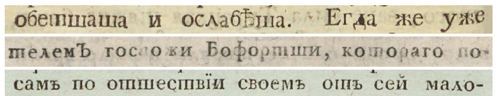
Levchenko 2025, Fig. 4: Civil font, 1750–1800. Note the variable “ш”, sometimes close to “т”.
The data
1,029 pages from 428 books, never published online: a test the models cannot have memorized.
The task
Diplomatic transcription: keep the period spelling, hyphens, line breaks and even printers’ errors.
The contest
12 models (GPT, Claude, Gemini, Qwen, Llama) against Tesseract, Surya and Transkribus.
Result 1: general LLMs beat classic OCR, with no training
Tesseract 4.0
21.6
Transkribus PyLaia
26.9
Surya (multilingual)
46.0
Gemini-2.5-Pro
3.4
Gemini-2.5-Flash
4.9
Qwen-2.5-VL
5.8
Claude-3.5
6.8
GPT-4o
9.2
Llama-4-Scout
15.9
TrOCR, fine-tuned on this corpus
1.8
Character error rate (%), lower is better. Classic engines: 100-page sample. LLMs: full corpus, full-page mode. Levchenko 2025, Tables 1 and 3.
The fine-tuned TrOCR is the upper bound: it needed 495 corrected pages from the same corpus. The best LLM comes close with just a prompt.
Tesseract’s WER was 126%: a rate above 100% is possible (more on this in the metrics section above).
Result 2: “over-historicization”
Expected error: the model modernizes old spellings. Observed: models also insert archaic letters that were not in the book, letters Peter the Great’s reforms had already removed from the Civil font.
ѧforяlittle yus; reflexive endings, after palatalized consonants
ѡin…omega; prepositions and prefixes
ꙋforуmonograph uk; specific word positions
ѿforот“ot” ligature
59%
of files in which GPT-4o inserted archaic characters
Model family
Typical archaic insertions
GPT-4o, GPT-4.1
ѡ ѧ ꙋ ѿ ꙗ
o4-mini, Gemini-2.5-Flash
ѧ ѭ ѥ
Claude-3.7, Qwen-2.5
minimal
The text looks more “authentic” than the source, and a researcher who trusts it would conclude that this printing still used pre-Petrine letters. A character-level score cannot tell.
Levchenko 2025, §5 and Table 5. Other models listed in the paper are omitted.
A good CER can hide a bad error where it matters
CER, all characters vs. error on period-specific characters
Gemini-2.5-Pro
3.4
9.8
Gemini-2.5-Flash
4.9
12.9
Claude-3.5
6.8
15.2
GPT-4o
9.2
20.7
Llama-4-Scout
15.9
42.2
Full-page mode, Levchenko 2025, Table 3 (%).
Every model does worse on the characters that make the text period-specific than on characters in general: for the best model about three times worse. For a historian these are the characters that matter most.
Why would a model do that?
No period tags. Training data mixes Church Slavonic, pre-reform, 18th-century and post-1918 Russian, and the model does not know which one you mean.
“Old-looking” cues become a generic signal. Yus letters, omega and diacritics say historical text, so the model adds them.
Visual noise. Faded ink, bleed-through or worn type look like diacritics; models “err on the side of complexity.”
Family signatures. OpenAI, Anthropic and Google models show different error profiles, probably from different training data.
Levchenko’s interpretation; the paper does not have access to training data.
Everyday errors, all models
Truth
Output
Why
ї
і
the most common substitution
ъ
ь
hard vs. soft sign
ш
т
variable 18th-c. glyph shapes
Not all errors are equal. A random typo is noise; an insertion that always points the same way is bias, and bias survives in your counts, collocations and arguments.
Result 3: should an LLM correct the OCR?
Idea: run OCR first, then give an LLM the image and the draft text and ask for a corrected transcript.
Levchenko (Russian print, 18th c.)
Image + OCR text: no better than direct OCR for the stronger models; they “re-perform OCR.”
Text only: consistently worse.
advice: pick the best OCR model, skip correction
Humphries et al. (English handwriting, 1761–1827)
Claude correcting Gemini’s draft: modified CER 4.1%, WER 7.0% (reductions of 63% and 38%).
Correcting Transkribus output: modified WER down to 3.5%.
advice: transcribe, then correct
Same idea, opposite verdicts. For a historian the stakes are specific: does correction restore the source, or normalize it toward what the model finds likely?
Why might the results differ?
Who corrects whom. Humphries: a model correcting its own output gained only about 1%; gains came from a different model or from Transkribus drafts. The same weights that made the error tend to accept it as probable.
What kind of errors. Character-level noise (“furr5”) is easy for a language model to fix. A fluent, plausible error is not, and “over-historicization” is plausible by design.
Which language and period. English handwriting is well represented in training data. 18th-century Russian orthography is thin, so the corrector’s prior pulls toward the wrong period.
What counts as an error. Humphries’ headline numbers are modified: capitalization, punctuation and modernized spelling are ignored. Some “correction” may be normalization the metric forgives (our reading). Levchenko’s diplomatic standard does not forgive it.
Reasons 1–2 are Humphries’ own explanation; 3–4 are our interpretation, not tested in either paper.
For discussion: for your own source, would you accept a correction that improves modified WER but changes the spelling? Which of the two papers is closer to your material?
Case 2: Manchu word images
Chung & Choi, Computational Humanities Research 2 (2026)
manju gisun, “Manchu language.” Written vertically; letters change shape by position.
Problem: Manchu (endangered, essential for Qing history) has no practical OCR for real archival documents.
Training data: 60,000 synthetic word images rendered from a 130,917-word dictionary in several typefaces.
Models: three open VLMs (Llama-3.2-11B-Vision, Qwen2.5-VL-7B, -3B), fine-tuned with LoRA (a light-weight method).
Test: 753 word images from real scans of seven Qing sources, five handwritten and two printed.
You are an expert OCR system for Manchu script. Extract the text from the provided image with perfect accuracy. Format your answer exactly as follows: first line with ‘Manchu:’ followed by the Manchu script, then a new line with ‘Roman:’ followed by the romanized transliteration.
The prompt used in the paper (Chung & Choi 2026).
Result: a great score on synthetic data is not a great score on your sources
synthetic test vs. real archival words word accuracy, %
Llama-3.2-11B-Vision fine-tuned VLM
98.6
87.4
CRNN classic CNN + LSTM
99.9
56.8
Qwen2.5-VL-7B
86.3
33.7
Qwen2.5-VL-3B
83.5
27.8
The classic CRNN is nearly perfect on synthetic words (99.9%) and falls 43 points on real ones. The VLM falls 11 points: pre-trained visual and linguistic knowledge transfers better.
CER on real words: Llama 0.05, CRNN 0.166. The authors’ synthetic scores are also “likely optimistic” (they chose checkpoints on the same pool).
What still goes wrong in Manchu
Position-dependent letters. A Manchu letter changes form as initial, medial or final, and some vowels are “visually indistinguishable in isolation.”
Systematic confusion. On real words the three vowels a, i, e account for 47.5% of all Llama’s character errors (a alone 22.2%).
The same language knowledge cuts both ways. The authors credit VLMs for “linguistic knowledge to maintain coherence even when characters are visually ambiguous,” the same prior that makes a Russian model reach for ѧ.
1 in 8
real words still wrong (87.4% word accuracy). “Manual post-correction by domain experts” is needed before scholarly use.
9–15 s per word image on a 48 GB GPU: full pages and entire archives are not yet practical.
Scope matters: single, pre-cut words; formal Qing documents only; no layout or line segmentation. It is a proof of concept, not an archive-ready tool.
What the two cases teach
1
A language prior is a strength and a risk.It rescues a smudged letter (Manchu) and invents a period letter (Russian).
2
A low CER can hide systematic bias.Check which errors, not only how many.
3
Scores from synthetic or clean data overstate real performance.Test on a sample of your sources.
4
Decide: diplomatic or normalized transcription?Then say so in the prompt, and check that the output obeys.
5
Models differ, and they change.Same pages, same prompt, different model or different week: different errors.
From a specialist recognizer to a vision–language model
Classic: CRNN
CNNsees strokes
→
LSTMreads left→right
→
CTCletters
trained for one script or collection
needs cut-out lines and transcribed training pages
no knowledge of language beyond its training data
New: VLM
Vision encodersees the page
→
Language modelwrites the text
general-purpose: many scripts and tasks
takes a prompt: “transcribe,” “keep the old spelling”
language prior: knows what words look like
Evidence from Manchu: the CRNN fell from 99.9% to 56.8% on real words, the fine-tuned VLM from 98.6% to 87.4%. The same language knowledge that makes a VLM robust is what made the Russian models “historicize.”
The pipeline, from page to text
1Scan / photopage image
1Preprocessingdeskew · binarize · crop · resize
Patchesimage cut into a grid of small tiles
Vision encoder(a ViT) turns each patch into a vector
2Text prompt“Transcribe this page exactly. Keep line breaks and the original orthography. Do not correct or translate.”
3Language decoder (LLM)
Reads image tokens and prompt tokens together, using attention.
Then predicts the most probable next token: a character or part of a word.
Image evidence + language prior → next token
↺ each new token is fed back in
temperature 0 → always the top choice
4OCR text
紅樓夢小說本名石頭記作者相傳…
Where you intervene
1 image quality 2 prompt and context 3 model, version, settings 4 evaluation and correction
The decoder is a black box; the rest is your method.
Inside the decoder: one token at a time
The model sees one long sequence and keeps extending it. (Tokens simplified; real tokenizers split text differently.)
img₁img₂img₃…img₂₅₆Transcribethispage…
↑ image tokens from the vision encoder ↑ prompt tokens ↓ generated tokens appear one by one
紅樓夢小說本名石頭記作⟨end⟩
Each new token is chosen using the image tokens, the prompt, and everything generated so far. This is the attention mechanism from the earlier demo.
The output is a probability distribution over tokens; temperature controls how much is sampled from it. For OCR, set it to 0 (Humphries et al. did) so the same image gives the same text.
The decoder was trained to write plausible text. It is not copying pixels, so it can write something that is fluent but is not on the page.
A toy illustration of one decoding step. The numbers are invented for teaching, not measured.
What the pixels say
The glyph is worn and blurry
я0.40
ѧ0.34
а0.20
×
What the language prior expects
“historical text, old orthography”
я0.15
ѧ0.55
а0.12
→
Decision
weighted together
ѧwins
A letter that was not printed is written down, confidently.
Where the image is clear, evidence wins. Where it is ambiguous (worn type, ink bleed, rare glyphs), the prior fills the gap.
So errors are not random: they are pulled toward what the model finds plausible. That is why “looks right” is not a test.
The prompt is part of your method
Levchenko, baseline (one text line)
Extract the OCR text from this 18th-century Russian book line. Preserve the original Old Russian orthography.
Humphries et al. (system message, abridged)
Your task is to accurately transcribe handwritten historical documents, minimizing the CER and WER. Work character by character, word by word, line by line, transcribing the text exactly as it appears on …
Levchenko also tried context-enhanced prompts: book information and a list of period characters, in English and in Russian.
Russian prompts significantly lowered CER for several models (by up to 0.02, p < 0.05); some English context prompts raised errors; the strongest models cared little.
A template for your own sources (ours, adapt it and test it):
Task: transcribe this page.
Language and period: Russian, printed c. 1760, Civil font.
Style: diplomatic. Keep original spelling, hyphens and line breaks. Do not modernize, correct, or add letters not visible.
Unclear: write [?] instead of guessing. Output: the text only.
A responsible workflow
1
Pilot on 10–20 pagestranscribe by hand: your own ground truth (Levchenko)
2
Preprocess, then compareraw vs. cleaned; line vs. page
3
Write the promptlanguage, period, diplomatic or normalized
4
Fix settings, log everythingmodel name and version, date, temperature 0. Output varied across days: CV 0.04 for Gemini-2.5-Pro vs. 0.31 for Claude-3.5
5
EvaluateCER and WER, plus your own metric for the errors that matter
6
Spot-check against the imagenever read only the text; fluent output can be wrong
LLM post-correction is not a free fix (Case 1, Result 3): Levchenko and Humphries disagree. Test it on your own sources.
Contamination: if your pages are online, the model may have seen them in training. Prefer unpublished sources for benchmarks.
Recap
1
OCR turns images into text. That text is a model’s reading, not the source.
2
Prepare images: deskew, even light, binarize if it helps, crop, enough pixels per character, lossless format.
3
CER and WER = (S + D + I) / N. Define what counts, and add a metric for the errors you care about.
4
Bias, not just noise: LLMs “over-historicize” (Russian); synthetic scores fail on real documents (Manchu).
5
VLMs = vision encoder + language decoder + your prompt: image evidence combined with a language prior.
6
Validate on your own sources, log the model, and spot-check against the image.
Sources
Maria Levchenko, “Evaluating LLMs for Historical Document OCR: A Methodological Framework for Digital Humanities,” Proc. First Workshop on NLP and Language Models for Digital Humanities (RANLP 2025), 75–85. Fig. 4 and Tables 1–5 above.
Yan Hon Michael Chung and Donghyeok Choi, “Fine-tuning vision–language models as OCR systems for low-resource languages: A case study of Manchu,” Computational Humanities Research 2 (2026): e20. doi:10.1017/chr.2026.10042. Figs. 1–4 and Tables 2–4 above (CC BY 4.0).
Mark Humphries et al., “Unlocking the Archives: Large Language Models Achieve State-of-the-Art Performance on the Transcription of Handwritten Historical Documents,” arXiv:2411.03340 (2024). Handwriting paper, presented by students; its tables and figures appear throughout.
Preprocessing demo images were made for this class from a library scan of the Hongloumeng preface (OpenCV). The decoder and prior illustrations use invented numbers and are labeled as such.